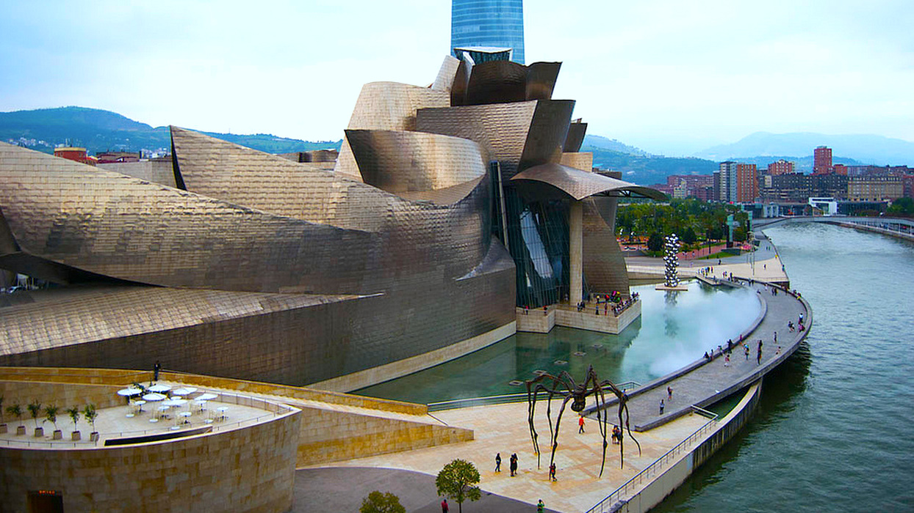
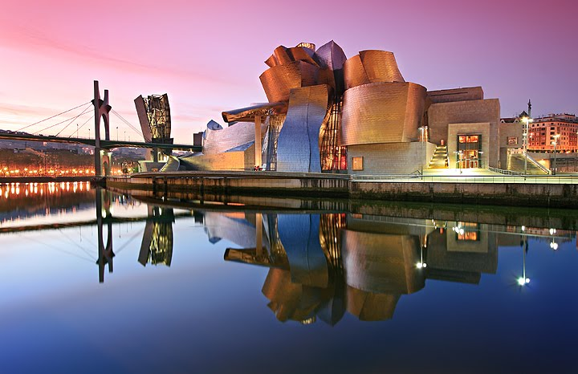
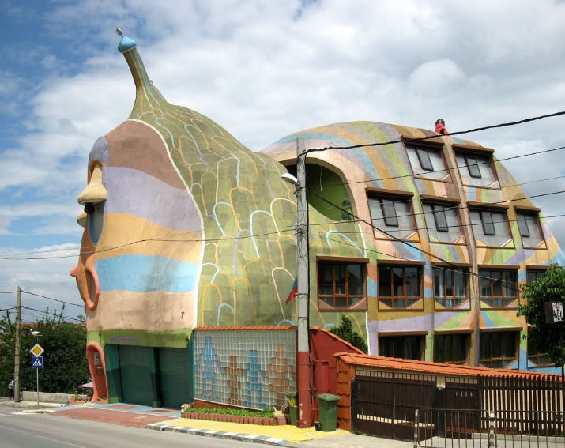
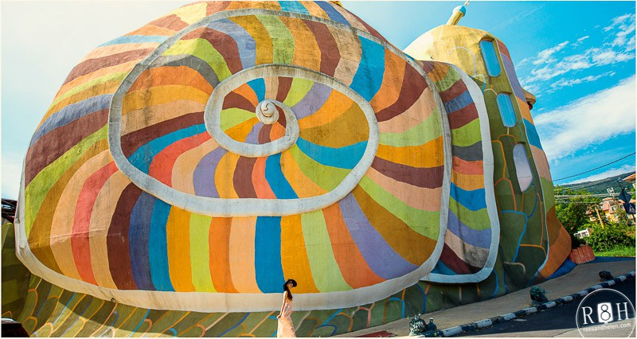
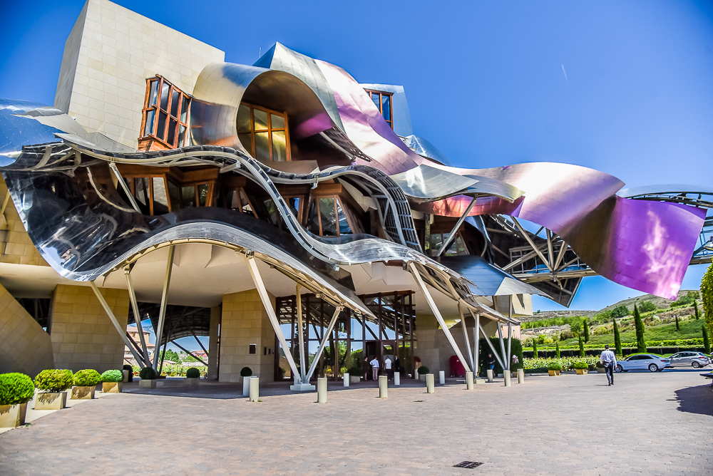
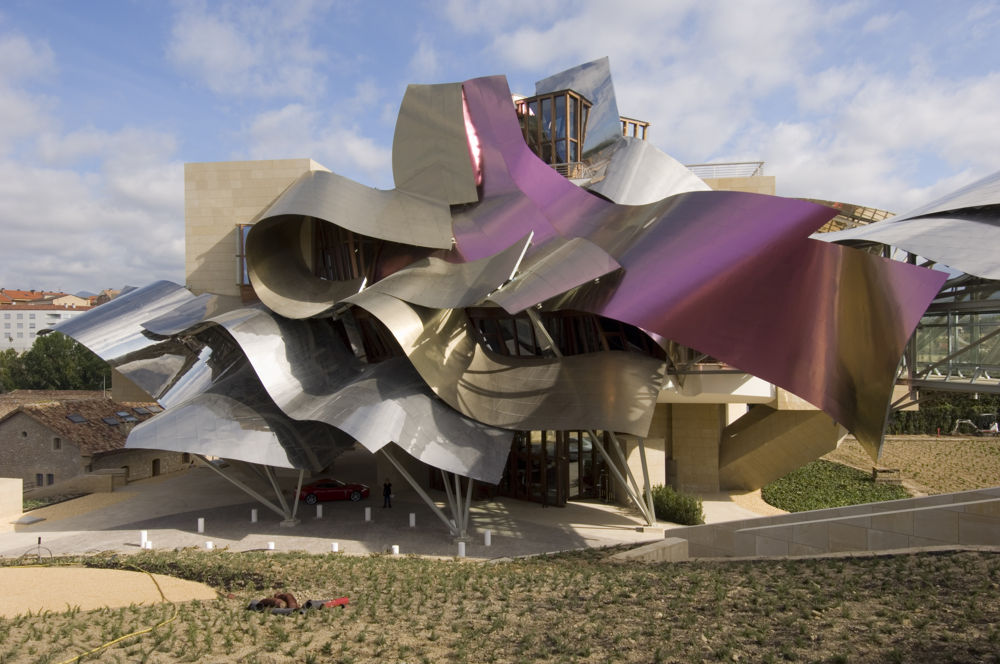
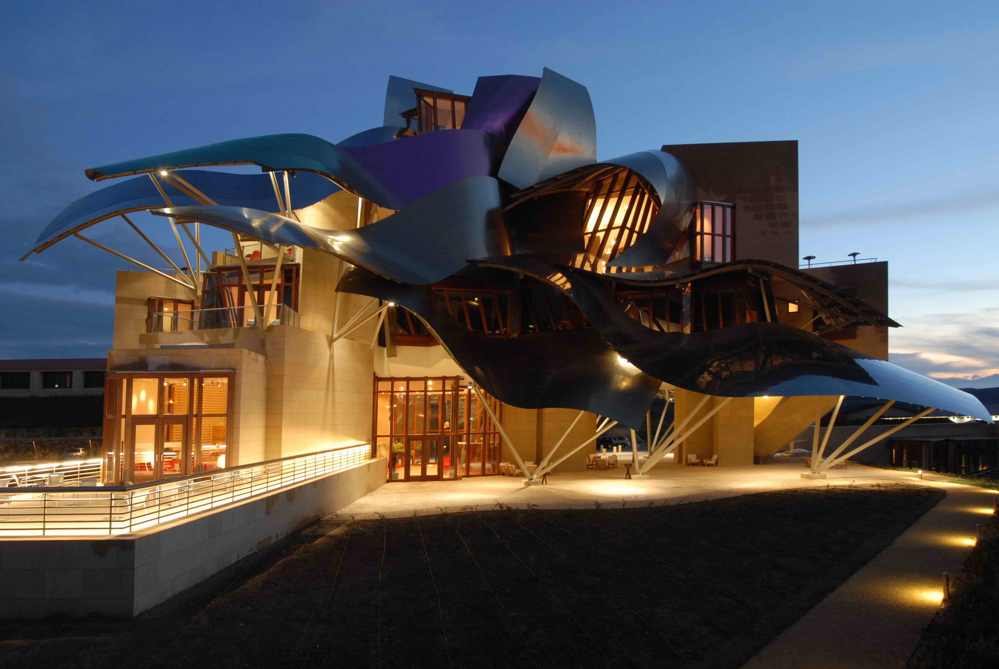

Unusual buildings
Hotel Galеria Spirit
Дім виглядає як барвистий вибух сучасного мистецтва. Він розташований прямо на кордоні країни з Австрією. Недалеко від Старого міста Братислави, унікальний виглад готелю виділяється серед інших будівель міста.
Готель з його вражаючими поглядами і казковим авангардним архітектурним рішенням в даний час є рідкість Братислави, які майже не мають туристів не пропустити.Готель орієнтований на мистецтво і зростаюче здоров'я і красу. Він входить в список найбільш унікальних споруд в світі на 45-му місці.
Guggenheim Museum
музей сучасного мистецтва, який запроектував канадсько-американський архітектор Френк Гері і збудувала фірма Ferrovial у 1997. Розміщений у Більбао, Країна Басків, Іспанія. Побудований на березі річки Nervion, яка протікає через місто і впадає в Атлантичний океан.
 Музей Ґуґґенгайма — один з кількох музеїв, побудований завдяки фонду Соломона Р. Ґуґґенгайма. Як постійна колекція музею так і привезені виставки містять роботи іспанських та іноземних майстрів.
Snail House
Однією з цікавих пам'яток в кварталі Симеоново міста Софія (Болгарія) є райдужний, казковий равлик, який приховує в собі житловий будинок, він так і називається - Будинок-Равлик (Snail House). Багато туристів приходять до цього місця спеціально, щоб подивитися на цю дивну споруду, так як вже довший час саме вона займає перше місце в рейтингу найбільш дивних будівель світу по версії видання Strange Buildings.
 З боку, здається, що цей равлик лізе на проїжджу частину дороги, несучи на собі теж не менш екстравагантно виконані метелика і божу корівку. Дивлячись на Будинок-равлик з одного боку, то можна помітити, що в будинку немає вікон, але вони є, і розташувалися на іншій стороні будівлі, напевно, вона найбільш сонячна і світла цілком вистачає для освітлення всіх приміщень.
Hotel Marqués de Riscal
Розроблений відомим архітектором Франком Гері, цей розкішний готель розташований в самому серці іспанської винної країни, в середньовічному місті Елсьего. Готель «Маркіз де Рискаль» славиться кухнею Басков-Ріоха, а також бібліотекою на даху з видом на сільську місцевість.
  С момента своего открытия в 2006 году этот шедевр, созданный Фрэнком Гери Отель «Маркиз де Рисель», стал высоко цениться. Дизайн, искусство, кулинария, вино и пышный пейзаж все это создает незабываемое пребывание в Городе Вина. Роскошный интерьер отеля имеет несомненный признак дизайна Гери. Наклонные стены, зигзагообразные окна, высокие соборные потолки и множество заказных деталей создают впечатление не простого отеля, а произведения искусства, с его сорока тремя обычными номерами и номерами люкс.
valeriash1709@gmail.com
lina.ometsinskaya@gmail.com
Kirill.korney@gmail.com